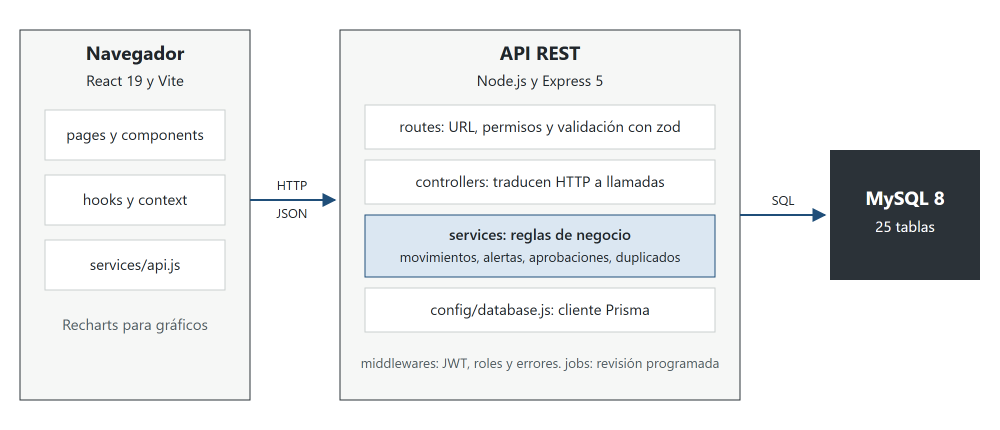
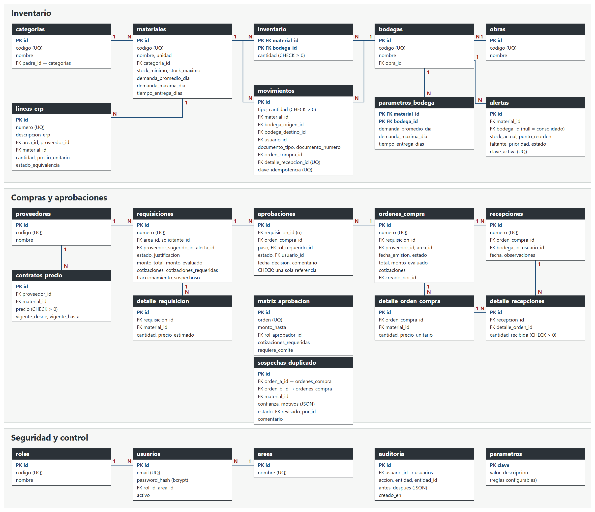

Quiz #2, trabajo práctico
Análisis de compras y sistema Construct Inventory para Constructora Del Valle S.A.
Constructora Del Valle S.A. tiene tres áreas que compran por su cuenta: Obras, Mantenimiento y Bodega Central. Esa autonomía produce los síntomas que analiza este trabajo: un mismo insumo con varios nombres, órdenes repetidas, precios distintos al contrato y materiales que llegan al punto de reorden sin que nadie lo advierta.
La Parte A resuelve los cinco ejercicios de compras e inventario. La Parte B construye la Opción 2 del enunciado, un control de inventario para construcción, con una API propia en Node.js conectada a MySQL. El sistema reproduce con sus datos semilla las cifras de la Parte A, y una prueba automatizada comprueba cada una.
| Etapa | Responsable | Actividad | Documento | Control interno | Riesgo que evita |
|---|---|---|---|---|---|
| Requisición | Solicitante del área | Pide el material con código estándar y justificación | Requisición | Catálogo obligatorio; revisión de stock disponible | Compras innecesarias o sin clasificar |
| Aprobación | Rol según la matriz | Autoriza por monto acumulado y verifica cotizaciones | Registro de aprobación | Quien solicita no aprueba; firma con fecha y comentario | Gasto no autorizado y fraccionamiento |
| Orden de compra | Compras | Formaliza proveedor, precio y condiciones | Orden de compra | Precio contra contrato; detector de duplicados | Sobreprecio y órdenes repetidas |
| Recepción | Bodega | Cuenta y verifica el material recibido | Boleta de recepción y entrada de inventario | Conteo contra la orden; no recibe de más | Faltantes y mercadería no pedida |
| Factura | Cuentas por pagar | Registra la factura y la concilia | Factura del proveedor | Three-way match | Pagar lo no recibido o a otro precio |
| Pago | Tesorería | Paga a la cuenta validada y en plazo | Comprobante de pago | Doble firma; separación de quien registra y quien paga | Pago doble o fraude |
Three-way match. Antes de pagar se comparan, línea por línea, la orden (qué se pidió y a qué precio), la recepción (qué llegó) y la factura (qué se cobra). Deben coincidir proveedor, artículo, cantidad y precio. Si difieren, la factura queda retenida hasta que Compras aclare la diferencia.
La matriz ordena bien los niveles de autoridad, pero evalúa cada compra de forma aislada. Quien divide una compra de ₡2 580 000 en dos de ₡1 290 000 evita a la Gerencia Financiera y una cotización. El caso no es hipotético: las órdenes OC-1041 y OC-1042 suman ₡2 580 000, y OC-1050 y OC-1053 suman ₡2 107 000. Cada par cruza el umbral de ₡2 000 000 sin que ninguna orden lo cruce por sí sola.
| Mejora propuesta | Cómo opera |
|---|---|
| Aprobar por monto acumulado | Se suman las solicitudes de la misma área y categoría, y del mismo proveedor si se indicó, dentro de una ventana de 15 días configurable. El aprobador se define por el acumulado. |
| Separación de funciones | Nadie aprueba lo que solicitó; si su rol es el aprobador, el paso sube al tramo siguiente. Una persona no firma dos pasos del mismo documento. |
| Cotizaciones verificadas | El documento no se aprueba con menos cotizaciones de las requeridas. |
| Compras bajo contrato | Un contrato vigente ya negoció precio. Conviene un trámite más ágil, sujeto al precio pactado. |
| Compras de emergencia | Vía excepcional con aprobación posterior obligatoria y un límite mensual, para que la urgencia no sirva de excusa. |
| Límites sin vacíos | Cada tramo se define solo por su tope. Así no queda sin regla un monto entre ₡250 000 y ₡250 001. |
| Registro de auditoría | Toda decisión guarda usuario, fecha, comentario y estado anterior, y permite revisar patrones justo bajo un umbral. |
Patrón de código: categoría-subcategoría-atributo. El código identifica al insumo sin importar quién lo pida.
| # | Descripción en el ERP | Categoría › subcategoría | Código estándar | Resultado |
|---|---|---|---|---|
| 1 | Cemento gris 50 kg | Materiales de construcción › Cemento y agregados | MAT-CEM-GRIS50 | Mismo insumo |
| 2 | Saco cemento uso general | Mismo insumo | ||
| 3 | CEM-GRIS-50 | Mismo insumo | ||
| 4 | Varilla #3 grado 40 | Materiales de construcción › Acero de refuerzo | MAT-ACE-VAR3G40 | Mismo insumo |
| 5 | Hierro 3/8 x 6 m | Equivalente por validar | ||
| 6 | Guantes de nitrilo talla L | Equipo de protección personal › Protección de manos | EPP-MAN-NITL | Sin equivalente |
| 7 | Guantes trabajo L | EPP-MAN-TRAL | Sin equivalente | |
| 8 | Tubo PVC 1/2 SDR 13.5 | Plomería › Tubería | PLO-TUB-PVC12SDR135 | Sin equivalente |
Justificación. La línea 2 no indica el peso, pero la misma compra (Proveedor B, 40 unidades a ₡7 100) aparece en A3 como “Cemento gris 50 kg”. La línea 3 es la OC-1061 de A3 con su código interno. La línea 5 figura en A3 como “Varilla #3”, y el número 3 corresponde a un diámetro de 3/8 de pulgada; sin embargo, su descripción no declara el grado 40, por lo que se trata como equivalente sujeto a validar la ficha técnica. Los guantes no se unifican: el nitrilo protege contra químicos y el de trabajo contra abrasión.
| Insumo | Cantidad | Menor precio | Costo original | Costo consolidado | Ahorro | % |
|---|---|---|---|---|---|---|
| Cemento gris 50 kg | 540 | ₡6 300 | ₡3 464 000 | ₡3 402 000 | ₡62 000 | 1,79 |
| Varilla #3 | 560 | ₡2 150 | ₡1 231 000 | ₡1 204 000 | ₡27 000 | 2,19 |
| Total | 1 100 | ₡4 695 000 | ₡4 606 000 | ₡89 000 | 1,90 |
Costo original del cemento: 200 × 6 450 + 40 × 7 100 + 300 × 6 300. De la varilla: 500 × 2 150 + 60 × 2 600. Si la línea 5 no se valida, el ahorro confirmado baja a ₡62 000. El cálculo usa el menor precio observado, como pide el ejercicio; por eso la varilla usa ₡2 150 y no los ₡2 050 del contrato de A3.
Por qué sin clasificación no se negocia por volumen. Un proveedor concede descuentos sobre volúmenes demostrables. Si el ERP registra el mismo cemento con tres nombres, nadie puede afirmar que la empresa compra 540 sacos: solo ve tres compras menores. Sin esa cifra consolidada no hay argumento para negociar, ni forma de comparar precios entre áreas o de detectar que una paga más que otra por lo mismo.
El documento define el gasto fuera de contrato como la compra hecha a un proveedor o a un precio distinto al negociado. Bajo esa definición se clasifican las órdenes. Esto no prueba un incumplimiento legal: el enunciado no indica que exista exclusividad con el Proveedor A.
| OC | Proveedor | Artículo | Cant. | Precio | Contrato | Dif. | Sobreprecio | Clasificación |
|---|---|---|---|---|---|---|---|---|
| 1041 | A | Cemento | 200 | ₡6 450 | ₡6 300 | ₡150 | ₡30 000 | Fuera por precio |
| 1042 | A | Cemento | 200 | ₡6 450 | ₡6 300 | ₡150 | ₡30 000 | Fuera por precio |
| 1047 | B | Cemento | 40 | ₡7 100 | ₡6 300 | ₡800 | ₡32 000 | Fuera por proveedor |
| 1050 | C | Varilla | 500 | ₡2 150 | ₡2 050 | ₡100 | ₡50 000 | Fuera por proveedor |
| 1053 | C | Varilla | 480 | ₡2 150 | ₡2 050 | ₡100 | ₡48 000 | Fuera por proveedor |
| 1058 | D | Varilla | 60 | ₡2 600 | ₡2 050 | ₡550 | ₡33 000 | Fuera por proveedor |
| 1061 | A | Cemento | 300 | ₡6 300 | ₡6 300 | ₡0 | ₡0 | Conforme |
| Sobreprecio total frente al contrato | ₡223 000 | |||||||
El gasto del mes es ₡7 017 000, de los cuales ₡5 127 000 (73,1 %) están fuera de contrato. El incumplimiento más claro es del Proveedor A, que facturó a Obras ₡6 450 teniendo un contrato de ₡6 300: ₡60 000 reclamables, o ₡30 000 si se anula la OC-1042. Las compras a otros proveedores son desviaciones que pagaron más que la referencia, no faltas demostradas.
Criterio: mismo proveedor y artículo, cantidad igual o con diferencia de hasta 5 %, y fechas a un máximo de 3 días. Además se revisan el área y el precio.
| Par | Evidencia | Confianza |
|---|---|---|
| OC-1041 y OC-1042 | Proveedor A, cemento, 200 unidades cada una, misma fecha, misma área y mismo precio | Alta |
| OC-1050 y OC-1053 | Proveedor C, varilla, 500 y 480 unidades (4 % de diferencia), un día de separación, misma área y mismo precio | Media |
Son sospechas, no duplicaciones confirmadas: los datos no permiten descartar que fueran pedidos distintos para frentes de obra diferentes. Un dato apoya la sospecha, sin probarla: las líneas del ERP en A2 incluyen la OC-1041 y la OC-1050, pero no las OC-1042 y OC-1053.
| Escenario | Cálculo | Mensual | Proyección anual |
|---|---|---|---|
| Solo sobreprecio | Suma de sobreprecios de todas las órdenes ejecutadas | ₡223 000 | ₡2 676 000 |
| Si OC-1042 es duplicada | 223 000 − 30 000 + 1 290 000 | ₡1 483 000 | ₡17 796 000 |
| Si también OC-1053 lo es | 1 483 000 − 48 000 + 1 032 000 | ₡2 467 000 | ₡29 604 000 |
Al tratar una orden como duplicada se resta su sobreprecio para no contarlo dos veces. La proyección multiplica un solo mes por 12 y debe leerse como orden de magnitud. Además, un material duplicado que se conserva en bodega inmoviliza capital; solo es pérdida total si no llega a consumirse.
Ejercicio académico con tres proveedores ficticios. Las notas ilustran el método y no describen empresas reales. Escala: 1 deficiente, 5 excelente.
| Criterio | Peso | Alfa | Pond. | Beta | Pond. | Gamma | Pond. |
|---|---|---|---|---|---|---|---|
| Precio | 25 % | 4 | 1,00 | 3 | 0,75 | 5 | 1,25 |
| Calidad | 25 % | 4 | 1,00 | 5 | 1,25 | 3 | 0,75 |
| Cumplimiento de entregas | 20 % | 3 | 0,60 | 5 | 1,00 | 3 | 0,60 |
| Condiciones de crédito | 10 % | 4 | 0,40 | 3 | 0,30 | 3 | 0,30 |
| Servicio posventa | 10 % | 3 | 0,30 | 4 | 0,40 | 3 | 0,30 |
| Riesgo de dependencia | 10 % | 3 | 0,30 | 3 | 0,30 | 4 | 0,40 |
| Puntaje ponderado | 100 % | 3,60 | 4,00 | 3,60 |
Pesos. Precio y calidad suman la mitad porque el material define el costo y la seguridad estructural. La entrega pesa 20 % porque un atraso detiene cuadrillas en obra. Notas. Gamma tiene el mejor precio, pero calidad y entregas regulares. Beta cuesta más y es la más confiable. Alfa ofrece equilibrio y el mejor crédito.
Recomendación: mantener dos proveedores estratégicos. Beta como principal por su calidad y cumplimiento, y Alfa como segundo: empata con Gamma en puntaje, pero supera su calidad, que es el criterio que más afecta a la obra. Consolidar en uno solo concentraría volumen, pero expondría a la empresa a desabastecimiento si ese proveedor falla, a perder poder de negociación con el tiempo y a quedar sin alternativa ya evaluada. Diversificar en muchos proveedores repetiría la dispersión que originó la fuga de A3.
Fórmulas del enunciado: SS = (demanda máxima − demanda promedio) × L; PR = d × L + SS.
| Material | d | Máx. | L | SS | PR | Stock | Dif. | Estado | Acción |
|---|---|---|---|---|---|---|---|---|---|
| Cemento gris 50 kg | 40 | 55 | 3 | 45 | 165 | 190 | +25 | Sobre PR | Vigilar; lo cruza en un día |
| Varilla #3 | 120 | 160 | 5 | 200 | 800 | 850 | +50 | Sobre PR | Vigilar; lo cruza en un día |
| Block 12 × 20 × 40 | 600 | 900 | 4 | 1 200 | 3 600 | 2 800 | −800 | Bajo PR | Pedir hoy, prioridad 2 |
| Arena (m³) | 6 | 10 | 2 | 8 | 20 | 14 | −6 | Bajo PR | Pedir hoy, prioridad 1 |
Deben reponerse hoy Arena y Block. La prioridad usa el stock como porcentaje del punto de reorden y el margen de cobertura frente al tiempo de entrega:
| Material | Stock / PR | Cobertura promedio | Margen sobre L | Cobertura máxima | Margen sobre L |
|---|---|---|---|---|---|
| Arena | 70,0 % | 2,33 días | +0,33 | 1,40 días | −0,60 |
| Block | 77,8 % | 4,67 días | +0,67 | 3,11 días | −0,89 |
La Arena va primero por tener el menor porcentaje y solo un tercio de día de holgura con demanda normal. Con demanda máxima, Block queda peor en días absolutos, por lo que ambas órdenes deben emitirse hoy. Cemento y Varilla no requieren pedido hoy, pero cruzan su punto de reorden tras un día de demanda promedio (150 y 730 unidades).
| Campo | Entrada | Salida | Traslado | Ajuste |
|---|---|---|---|---|
| Material, cantidad y unidad | Sí | Sí | Sí | Sí |
| Fecha, hora y usuario responsable | Sí | Sí | Sí | Sí |
| Ubicación | Destino | Origen | Origen y destino | Origen o destino |
| Documento de origen | Orden de compra y recepción | Vale de salida | Boleta de traslado | Acta de ajuste |
| Observaciones | Opcional | Opcional | Opcional | Justificación obligatoria |
Construct Inventory implementa la Opción 2 mediante el Camino 2 del enunciado: API REST en Express, acceso a datos con Prisma, MySQL 8 y migraciones versionadas. Una interfaz React consume la API real.
| Requisito o punto extra | Implementación |
|---|---|
| Registro de materiales | Guarda mínimo, máximo, demanda y tiempo de entrega. El punto de reorden se calcula y la API rechaza que se digite. |
| Movimientos y stock | Entrada, salida, traslado y ajuste con usuario, ubicación y documento. El stock se obtiene sumando movimientos. |
| Alerta de reorden | Se evalúa al registrar cada movimiento y en una revisión programada. Una restricción única impide alertas repetidas. |
| Compras duplicadas | Regla con ventana y tolerancia configurables. Muestra los motivos y queda para revisión humana sin bloquear. |
| Trazabilidad | Por material, cada entrada se vincula con su orden, proveedor y recepción, seguida de los movimientos posteriores. |
| Extra: dashboard | Trece secciones en React con indicadores y gráficos calculados en vivo. |
| Extra: matriz de aprobación | La orden queda pendiente hasta que aprueba el rol correcto; incluye comité, rechazos y detección de fraccionamiento. |
| Extra: pruebas | 77 pruebas con Jest y Supertest contra una base MySQL real; todas pasaron en la última ejecución. |
| Extra: integración | Una alerta genera una requisición y sugiere el proveedor de menor precio entre contratos y últimas compras. |

El modelo tiene 25 tablas normalizadas, con llaves foráneas, índices, restricciones únicas y CHECK. El detalle de cada tabla está en docs/modelo-er.md. Las relaciones hacia usuarios y entre bloques se muestran como campos FK para mantener legible el diagrama.

Provienen del documento: las 8 líneas del ERP, las 7 órdenes, el contrato, la matriz, demandas, tiempos de entrega y stocks. Son ficticios y están marcados en el código: usuarios, obras, bodegas, stock mínimo y máximo, y dos salidas de consumo (550 sacos y 190 varillas) que concilian lo recibido en octubre con el stock de A5.
Documento del curso: Quiz #2, Trabajo práctico, Gestión de Inventarios. Fuente de todos los datos de la Parte A.
MySQL 8.0 Reference Manual, Oracle: dev.mysql.com/doc/refman/8.0/en. Prisma ORM Documentation: prisma.io/docs. Express: expressjs.com. React: react.dev. El código se desarrolló con asistencia de IA, como permite el enunciado.